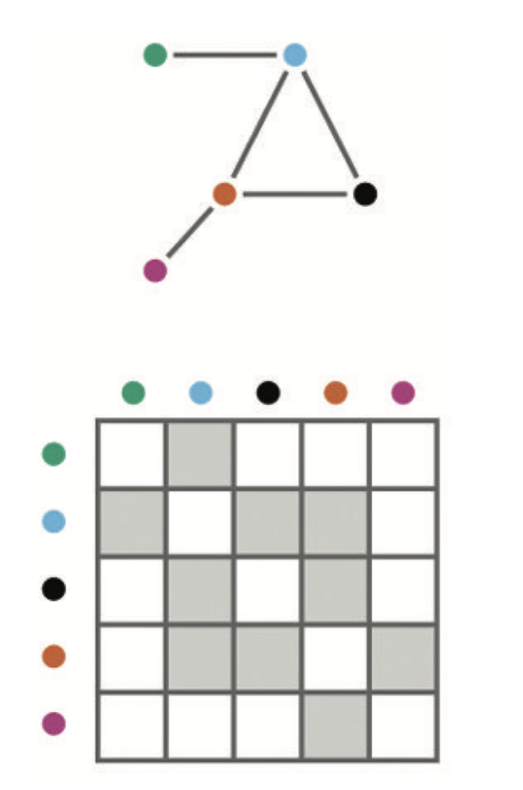
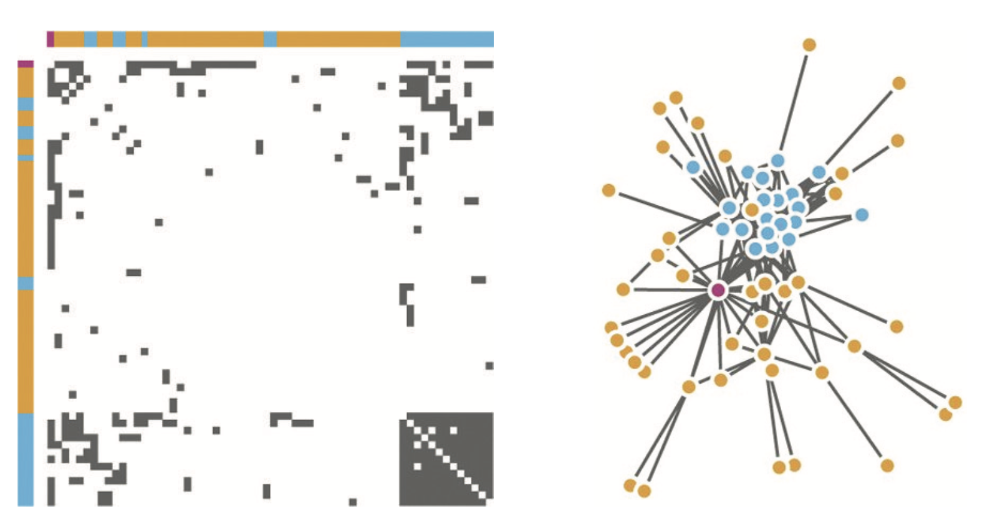
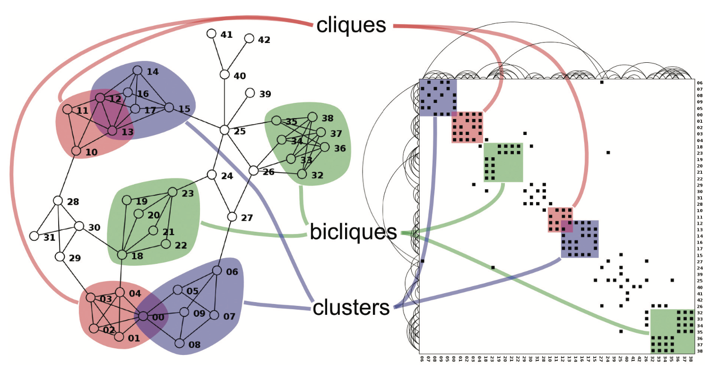

Visualización de redes y grafos
IIC2026 2021-2
Matriz de adyacencia
Visualización de redes y grafos
IIC2026 2021-2
Matriz de adyacencia

(Fuente: Libro "Visualization, Analysis and Design" )
Matriz de adyacencia

(Fuente: Libro "Visualization, Analysis and Design" )
Matriz de adyacencia

(Fuente: Libro "Visualization, Analysis and Design" )
Matriz de adyacencia versus enlace-nodo
Ambas tienen ventajas y desventajas.
- Enlace-nodo suele ir bien con redes pequeñas
- Matriz de adyacenciao suele ir bien con redes grandes
Algunas tareas eficientes en matrices de adyacencia
- Estimación de número de nodos
- Estimación de número de enlaces
- Encontrar los nodos más conectados
- Encontrar un nodo según etiqueta
- Encontrar un enlace entre un par de nodos
Matriz de adyacencia
Visualización de redes y grafos
IIC2026 2021-2
¡Deja tus preguntas en los comentarios!